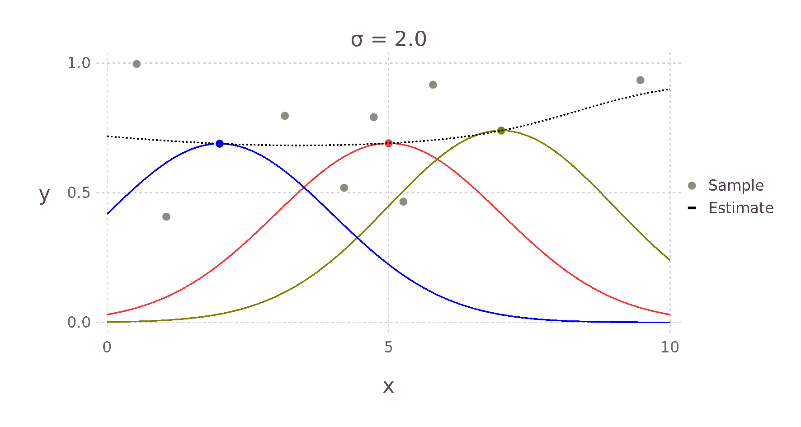

Implementing Kernel Density Estimation - Univariate
Introduction
Kernel Density Estimation is a technique typically used to approximate a probability density function via collected samples. The approach has two hyperparameters to consider: the choice of Kernel and its bandwidth. This article will build up an implementation in the Julia programming language for 1-dimensional data and explore possibilities for automatically determining the bandwidth.
Kernel Smoothing
A Kernel function acts as a weighted measure of distance between objects. It is not restricted exclusively to points in a space - see, for example, the string kernel - it should, however, in most cases be both symmetric and non-negative. For example, a Kernel function operating on real numbers generally has the following form:
\[ K_{h}(\bm{x}^*, \bm{x}_i) = D \left( \frac{ \left || \bm{x}_i - \bm{x}^* \right || }{ h(\bm{x}^*) } \right ) \]
where
- \(\bm{x}^* \in \mathbb{R}^p\) is the specific point for which we are calculating an estimate
- \(\bm{x}_i \in \mathbb{R}^p\) are the other points in the space
- \(\left || ... \right ||\) is a Norm, be that Euclidean or otherwise
- \(h(\bm{x}^*)\) determines the radius of the Kernel, or equivalently the weighting of a given comparison
- \(D(...)\) is a real-valued function
Several Kernels fitting this mould can be seen here.
Given a Kernel, we can create a continuous function that connects a set of points, i.e. smooths the data. In order to do this, we construct a local weighted average across a dataset. The form this average takes is a generalisation of the traditional weighted arithmetic mean,
\[ \bar{x} = \frac{\sum_{i = 1}^N w_i x_i}{\sum_{i = 1}^N w_i} \]
which, given \(N\) observations \(x_i\) and corresponding weights \(w_i\), constructs a global average of a given set of points.
The generalisation, named after Èlizbar Nadaraya and Geoffrey Watson, replaces the weights \(w_i\) with the result of the Kernel function producing the following form:
\[ \hat{Y} (\bm{x}^*) = \frac{ \sum_{i=1}^N K_{h}(\bm{x}^*, \bm{x}_i) Y(\bm{x}_i) }{ \sum_{i=1}^N K_{h}(\bm{x}^*, \bm{x}_i) } \]
Here,
- \(Y(\bm{x}_i)\) returns the magnitude of the sample at \(\bm{x}_i\)
- and \(N\) is the number of samples available to build an estimate from

For example, given a Kernel function that weights an estimate via the Euclidean distance to its surrounding points, we expect something like the \(+\) for the point \(\bm{x}^*\) in the image above, as \(d1\) is much smaller than \(d2\) and \(d3\). Therefore, the point with the most influence on the estimate is the point directly to the left.
Gaussian Kernel Smoothing
We create the Gaussian Kernel from the above more general form by setting \(D(u)\) to \(\text{exp}( -1/2 u^2)\) and \(h(x^*)\) to \(\sigma\). In this case, the correct norm is the \(L_2\) or Euclidean norm.
\[ K_{\text{smoother}}(x^*, x) = \text{exp} \left ( - \frac{1}{2} \left ( \frac{ x - x^* }{\sigma} \right )^2 \right ) \]
Using this Kernel function and the Nadaraya-Watson estimator, we can then build an estimate for each point \(x^*\). The weighting contributed by each surrounding point falls off in a bell curve-like manner with increased distance. The red, green and yellow curves in the image below show this relative weighting as the \(\sigma\) value of the Kernel is varied.

These two equations can be almost directly written as Julia code giving us the following implementation.
Ksmoother(x_star, x, σ) = ℯ^( - 1/2 * (x_star - xs)^2 / σ^2)
function NadarayaWatsonEstimate(x_star, xs, Ys, σ)
W = Ksmoother.(x_star, xs, σ)
sum( W .* Ys ) / sum( W )
endHaving chosen a value \(\sigma\), our estimate for a specific point \(x^*\) can then be found as follows
σ = 0.75
# Surrounding Points
x = [ 0, 4.21, 5.79, 7.37, 9.47 ]
Y = [ 0.03, 0.08, 0.93, 0.91, 0.99 ]
Yhat = NadarayaWatsonEstimate(x_star, x, Y, σ)Gaussian Kernel Density Estimate
The main difference between the smoother we constructed, and a density estimate is that we haven't ensured that the area under the curve integrates to \(1\). Our first step is to add the missing normalising term of the Gaussian normal density function to our Kernel from before, producing
\[ K_\sigma(x^*, x) = \frac{1}{\sigma \sqrt{2 \pi}} \text{exp} \left ( - \frac{1}{2} \left ( \frac{x^* - x}{\sigma} \right )^2 \right ) \]
or in Julia
K(x_star, x, σ) = 1/(σ * √(2*π)) * ℯ^( - 1/2 * (x_star - x)^2 / σ^2)Instead of the mean \(\mu\) typical of the definition, we have one of the samples, \(x\). In fact, to construct an estimate of our density, we build a mixture from \(N\) Gaussian distributions, with the mean of each being one of the samples \(x_i\). Observing this fact then leads to the equation for our probability density estimate.
\[ \hat{f}(x | \sigma, x) = \frac{1}{N} \sum_i^N K_\sigma(x, x_i) \]
In Julia we can write this as
f(x, σ, xs) = 1/length(xs) * sum(K.(x, xs, σ))We can similarly construct the cumulative density function estimate by taking the average of the cumulative density of each of the Gaussian distributions. The cumulative density of a single Gaussian, where \(\text{erf}\) is the error function, is as follows.
\[ \Phi(x | \mu, \sigma) = \frac{1}{2} \left [ 1 + \text{erf} \left ( \frac{x - \mu}{\sigma \sqrt{2}} \right) \right ] \]
As in the case of the probability density function, our estimate is created by averaging each of the cumulative density functions.
\[ \hat{\text{cdf}} (x| \sigma, x) = \frac{1}{N} \sum_i^N \Phi(x | x_i, \sigma) \]
By making use of the SpecialFunctions package, we implement these two equations in Julia.
using SpecialFunctions
Φ(x, μ, σ) = 1/2 * (1 + erf((x - μ) / (σ * √2)))
cdf(x, σ, xs) = 1/length(xs) * sum(Φ.(x, xs, σ))We can test these functions by generating samples from a known Gaussian distribution to see whether the estimates match.
using Distributions
μ = 4
σ = 2
true_distribution = Normal(μ, σ)
samples = rand(true_distribution, 50)
pdf_estimate(x) = f.(x, σ, Ref(samples))
@show pdf(true_distribution, 2), pdf_estimate(2)
# (0.121, 0.115)
@show pdf(true_distribution, 3), pdf_estimate(3)
# (0.176, 0.141)
@show pdf(true_distribution, 5), pdf_estimate(5)
# (0.176, 0.137)What becomes apparent when plotting the estimate and actual distributions is that the estimate does not match exactly even when the true variance is known and there are several samples. This is because the estimate is not a single density but an average of many.
Estimating Bandwidth
The discrepancy we have just seen suggests we need an alternative approach for determining our estimator's \(\sigma\) value. In the more general case, where we are not just considering the Gaussian kernel, this weighting is known as the bandwidth. It corresponds to the \(h(\bm{x}^*)\) in our original, more general form above. There are two types of approaches for determining the bandwidth, cross-validation and rule-of-thumb. We will focus on the second here.
Many of the rule-of-thumb approaches start by attempting to minimise the Mean Integrated Square Error (MISE) but simplify its calculation by introducing estimates and simplifications. Given a true probability density function \(f\), and a kernel estimate \(\hat{f}\), the MISE is as follows.
\[\begin{aligned} \text{MISE}(\hat{f}) &= \int \text{E} \left[ \left( \hat{f}(x) - f(x) \right)^2 \right ] \text{d}x \\ &= \int \left( \text{E} \left [ \hat{f}(x) \right ] - f(x) \right )^2 \text{d}x + \int \text{var} \hat{f}(x) \text{d}x \end{aligned} \]
This can be understood as the sum of the integrated square bias and integrated variance. During this part of the derivation, we are not restricting ourselves exclusively to the Gaussian Kernel, so we continue with a slightly more general form for our estimate.
\[ \hat{f}(x) = \frac{1}{n} \sum_{i}^n \frac{K \left( \left ( x - y \right ) / h \right )}{h} \]
As a reminder, we require that our Kernel is symmetric, non-negative and as we use it for density estimation, it should integrate to \(1\).
To fit this form of \(\hat{f}\) our Gaussian Kernel is defined \[ K(u) = \frac{1}{\sqrt{2\pi}} \text{exp} \left ( - \frac{1}{2} u^2 \right ) \] This results in the same form as we had above \[ \frac{K \left( \left ( x - y \right ) / \sigma \right )}{\sigma} = \frac{1}{\sigma \sqrt{2\pi}} \text{exp} \left ( - \frac{1}{2} \left( \frac{x -y}{\sigma} \right )^2 \right ) = K_\sigma(x, y) \]
To simplify the bias term we make use of the variable substitution \(y = x - hu\), \(\text{d}y = h \text{d}u\) and the Taylor expansion
\[ f(x - hu) = f(x) - h u f'(x) + \frac{1}{2}h^2 u^2 f''(x) + ... \]
to get
\[\begin{aligned} \text{bias} &= \text{E} \left [ \hat{f}(x) \right ] - f(x) \\ &= \int \frac{K \left( (x-y) / h \right )}{h} f(y) \text{d}y - f(x) \\ &= \int K(u) f(x - hu) \text{d}u - f(x) \\ &= \int K(u) \left ( f(x - hu) - f(x) \right ) \text{d}u \\ &= -h f'(x) \int u K(u) du + \frac{1}{2} h^2 f''(x) \int u^2 K(u)du + ... \end{aligned} \]
Due to the required symmetric property, we also have the equality
\[ \int_0^\infty u K(u) \text{d}u + \int_{-\infty}^0 u K(u) \text{d}u = 0 = \int u K(u) \text{d}u \]
as integrating either side of \(0\) results in the same absolute area, only the second side will be negative due to \(u\). Consequently, both sides of the integral cancel each other out.
Using this equality, we further simplify the bias term to
\[ \text{bias} = \frac{1}{2} h^2 f''(x) \int u^2 K(u)du + ... \]
The term \(\int u^2 K(u)du\) is the variance of the Kernel. We replacing it with the variable \(k\) for convenience. Now squaring and integrating the result nets us a second-degree approximation of the integrated square bias
\[ \frac{1}{4} h^4 k^2 \int f''(x)^2 dx \]
Recalling that variance can be expressed
\[ \text{var} \hat{f}(x) = \text{E} \left [ (X - \mu)^2 \right ] = \text{E} \left[ X^2 \right ] - \text{E} \left[ X \right ]^2 \]
we can use the same process on the variance term to simplify the remaining MISE term
\[\begin{aligned} \text{variance} &=\frac{1}{n} \int \frac{K \left ( \left ( x - y \right ) / h \right )^2}{h^2} f(y) \text{d}y - \frac{\left ( f(x) + \text{bias} \right )^2}{n} \\ &= \frac{1}{n h} \int f(x - h u) K (u)^2 \text{d}u - \frac{1}{n} \left ( f(x) + \text{bias} \right )^2 \\ &= \frac{1}{n h} \int \left( f(x) - htf'(x) + ... \right ) K (u)^2 \text{d}u - \frac{1}{n} \left ( f(x) + \text{bias} \right )^2 \end{aligned} \]
Typically, this is further simplified by considering only the case where the number of samples \(n\) is large and our bandwidth \(h\) is quite small. Under this assumption, the additional Taylor series terms approach zero relative to the initial \(f(x)\) term and the \(\frac{1}{n} \left ( f(x) + \text{bias} \right )^2\) approaches \(0\). Our variance is then
\[ \text{variance} \approx \frac{f(x)}{n h} \int K (u)^2 \text{d}u \]
Raising this term to the power of two and integrating over the \(f(x)\) term, which being a probability distribution integrates to one, gives us our integrated variance estimate
\[ \int \text{variance } \text{d}x \approx \frac{1}{nh} \int K(u)^2 \text{d}u \]
Together these terms build the Asymptotic Mean Integrated Square Error (AMISE) approximation, used in many bandwidth rule-of-thumb approaches.
\[ \text{AMISE}(h) = \frac{1}{nh} \int K(u)^2 \text{d}u + \frac{1}{4} h^4 k^2 \int f''(x)^2 k dx \]
In the literature this is often shorted to \(\frac{R(K)}{nh} + \frac{h^4 k^2 R(f'')}{4}\), where \(R(g) = \int g(x)^2 \text{d}x\).
We can then find an optimal bandwidth \(h\) by deriving our approximation with respect to \(h\) and equating it with \(0\).
\[\begin{aligned} \frac{\text{d}}{\text{d}h} \text{AMISE}(h) & = \frac{\text{d}}{\text{d}h} \frac{R(K)}{nh} + \frac{\text{d}}{\text{d}h} \frac{h^4 k^2 R(f'')}{4} \\ 0 &= - \frac{R(K)}{nh^2} + \frac{4 h^3 k^2 R(f'')}{4} \\ h^3 k^2 R(f'') &= \frac{R(K)}{nh^2} \\ h^5 &= \frac{R(K)}{k^2 R(f'')n} \\ h &= \left ( \frac{R(K)}{k^2 R(f'')n} \right ) ^{1/5} \end{aligned} \]
A more concise derivation of this approximation can be found in both (Silverman 1998, pages 36-40) and (Wand 1994, pages 19-22).
Optimal Bandwidth For Univariate Gaussian
Hoping to improve our Julia implementation above, we follow Silverman's treatment in (Silverman 1998, pages 45-48) and use this approximation to estimate the optimal \(h\) in the case of a Gaussian Kernel while under the assumption that the true density is a Gaussian distribution.
Starting with the \(R(K)\) term, we integrate over the square of our Gaussian Kernel.
\[\begin{aligned} R(K) &= \int \left ( \frac{1}{\sqrt{2\pi}} \text{exp} \left ( - \frac{1}{2} x^2 \right ) \right)^2 \text{d}x \\ &= \frac{1}{2 \pi} \int \left ( \text{exp} \left ( - \frac{1}{2} x^2 \right ) \right)^2 \text{d}x \\ &= \frac{\sqrt{\pi}}{2 \pi} \\ &= \frac{1}{2\sqrt{\pi}} \end{aligned} \]
Next, using our assumption that the true distribution is Gaussian, i.e. that \(f = \frac{1}{\sigma \sqrt{2 \pi}} \text{exp} \left( - \frac{1}{2} \frac{x^2}{\sigma^2} \right )\), we can solve for the \(R(f'')\) term.
\[\begin{aligned} R(f'') &= \int \left( \frac{\text{d}^2}{\text{d}x} \frac{1}{\sigma \sqrt{2 \pi}} \text{exp} \left( - \frac{1}{2} \frac{x^2}{\sigma^2} \right ) \right )^2 \text{d} x \\ &= \frac{1}{\sigma^{10} 2 \pi} \int \left( (x^2 - \sigma^2) \text{exp} \left( - \frac{1}{2} \frac{x^2}{\sigma^2} \right ) \right )^2 \text{d} x \\ &= \frac{1}{\sigma^{10} 2 \pi} \left( \frac{3 \sqrt{\pi} \sigma^5 }{4} \right ) \\ &= \frac{3}{8 \sigma^{5} \sqrt{\pi}} \end{aligned} \]
Remembering that \(k\) is the variance of our Kernel, in this case, equal to \(1\) as our Kernel is a standard Gaussian, our approximate optimal bandwidth is
\[\begin{aligned} h_{gaussian} &= (2 \sqrt{\pi})^{-1/5} \left ( \frac{3}{8 \sigma^{5} \sqrt{\pi}} \right )^{-1/5} (1^2 n)^{-1/5} \\ &= \left ( \frac{8}{6} \right )^{1/5} \sigma n^{-1/5} \\ &\approx 1.06 \sigma n^{-1/5} \end{aligned} \]
The unbiased standard deviation can be calculated as follows \[ \begin{aligned} \bar{x} &= \frac{\sum_i^n x_i}{n} \\ s &= \sqrt{\frac{\sum_i^n (x_i - \bar{x})^2}{n - 1}} \end{aligned} \]
We can now implement this approximation in Julia, using an unbiased estimate of the variance of the samples as our \(\sigma\).
function h_est_gaussian(samples)
μ = sum(samples) / length(samples)
unbiased_variance = sum((samples .- μ) .^ 2) / ( length(samples) - 1 )
1.06 * √(unbiased_variance) * length(samples) ^ (-1 / 5)
endComparing this new estimate with our previous estimate and the true probability, we see an improvement in the predicted values. This is because the bandwidth of the Kernels is smaller, causing less smoothing and allowing for a larger range of predicted values.
μ = 4
σ = 2
true_distribution = Normal(μ, σ)
samples = rand(true_distribution, 50)
pdf_estimate(x) = f.(x, σ, Ref(samples))
pdf_estimate_gaus_opt_h(x) = f.(x, h_est_gaussian(samples), Ref(samples))
@show pdf(true_distribution, 2), pdf_estimate(2), pdf_estimate_gaus_opt_h(2)
# (0.121, 0.115, 0.111)
@show pdf(true_distribution, 3), pdf_estimate(3), pdf_estimate_gaus_opt_h(3)
# (0.176, 0.141, 0.185)
@show pdf(true_distribution, 5), pdf_estimate(5), pdf_estimate_gaus_opt_h(5)
# (0.176, 0.137, 0.173)
@show h_est_gaussian(samples)
# 0.907
In the same way, we could formulate an approximately optimal bandwidth for all potential density functions \(f\), assuming we can find \(f\)'s second derivative. We do not, however, in general, know the true distribution \(f\); our motivation to use Kernel density estimation in place of directly fitting a distribution. The true distribution may be multimodal or skewed heavily, causing over-smoothing. Silverman's now ubiquitous Rule of Thumb takes the previously derived optimal \(h_{gaussian}\) and tries to account for some of these possibilities. His first suggestion is to use the interquartile range (IQR) when it is smaller than the standard deviation of the data. Therefore, in the case of skewed distributions, fewer samples will influence the estimate at each point, reducing overall smoothing and allowing for a more locally defined estimate. In other words, we reduce the influence of our choosing a Gaussian Kernel when it seems less likely that the data follows a Gaussian distribution. Following similar reasoning, he also suggests reducing the \(1.06\) term to \(0.9\) with experiments showing improvement when \(f\) is skewed or bimodal with marginal degradation in the case of a Gaussian. The result of these modifications is Silverman's Rule of Thumb
\[ h = 0.9 \text{ min} \left ( \sigma , \frac{IQR}{1.34} \right ) n^{-1/5} \]
(Silverman 1998, page 48)
In the case of a standard Gaussian distribution, the IQR is approximately \(1.34\sigma\)
Instead of making assumptions about the true distribution \(f\), we can opt for a nonparametric approach. One such method is explored in (Sheather and Jones 1991).
To be continued...